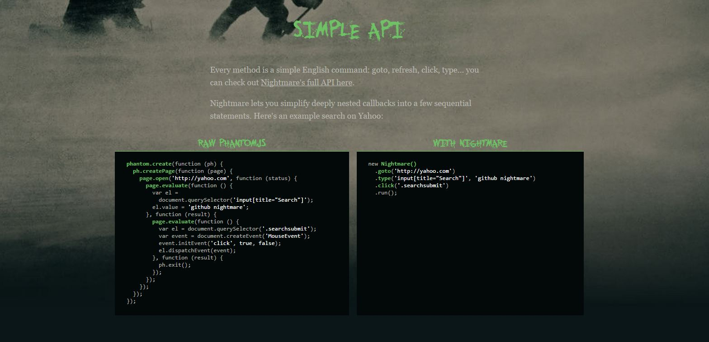
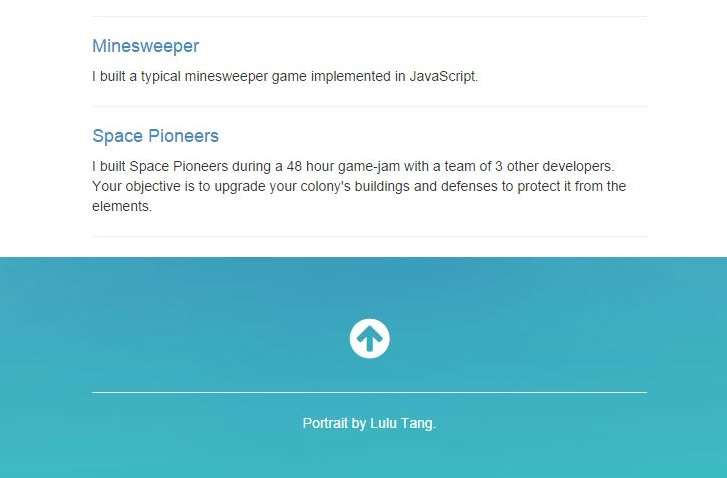
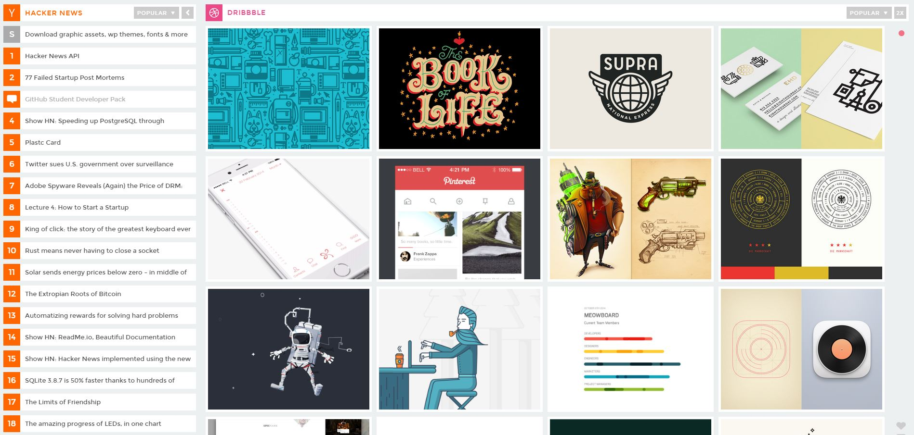
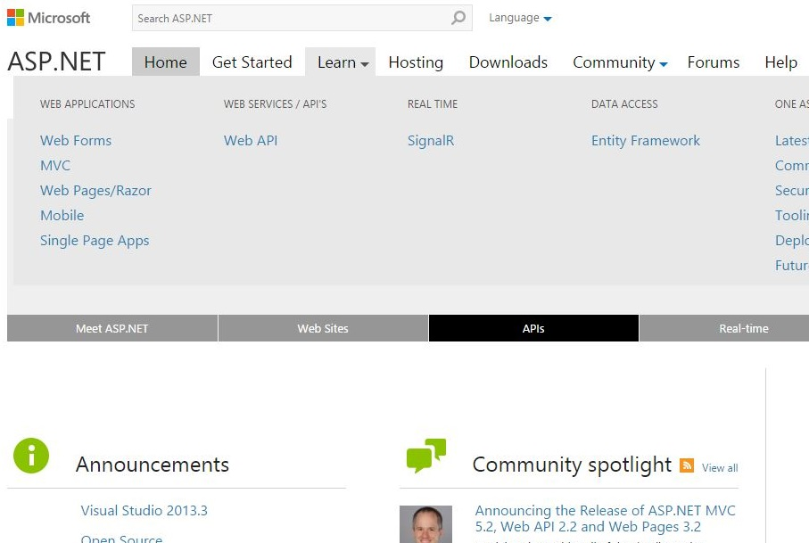
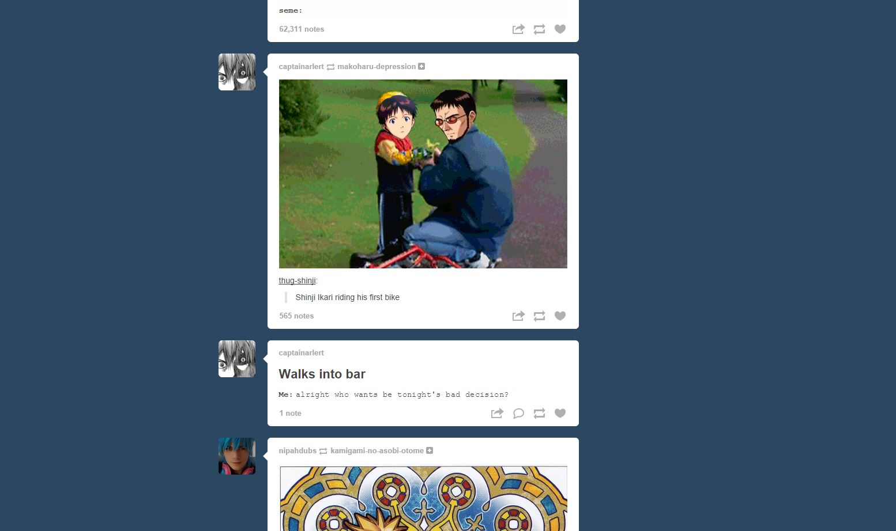
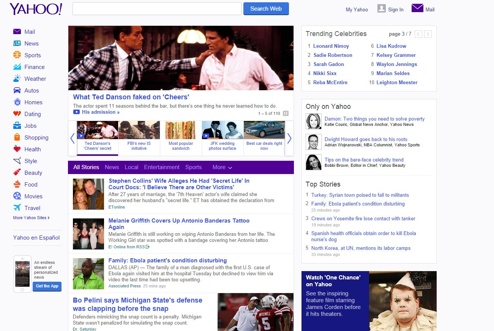
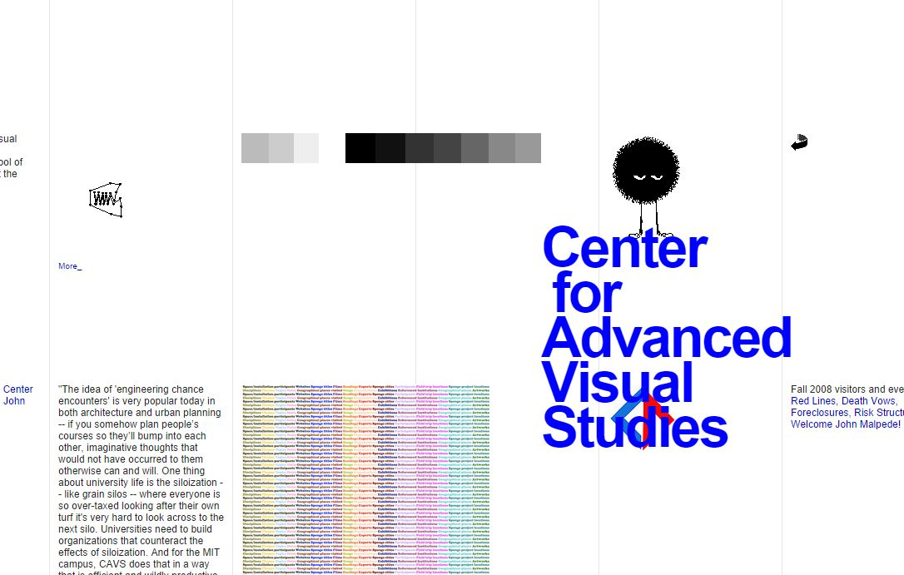

Affordance

The purpose of this site is to demonstrate the functionality of the js library. It does this splendidly by highlighting the code samples from the rest of the text and formatting them to optimally display the demo code.

This link does not look like a link. That's lame. I can't click on something that is not different enough to attract my attention.
Chunking

Different websites feeds are well seperated and more space is afforded to websites that deliver visual content.
There is very little visual seperation between the article and the rest of the website. It's very hard to know what to focus on.
Hick's Law
Evan's site has 3 navigational options, beautifully, stupidly simple.

So. Many. Options. Where am I going? How do I learn this? I am confused and intimitdated.
Signal-to-Noise Ratio

Nothing but content, no ads or distractions.

What am I supposed to be looking at, whats going on? What's important? So noisy.
Modularity
You can pull it off of youtube and embed it into any site and it still looks and functions great.

This page is artfully bad. Its elements are so intermingled, absolutely nothing about this is modular or reusable.